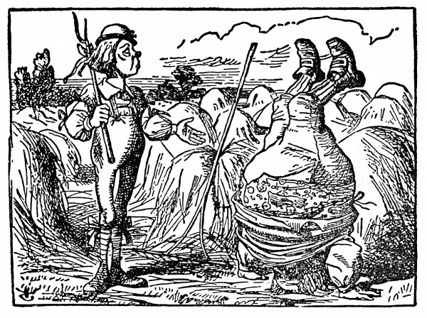
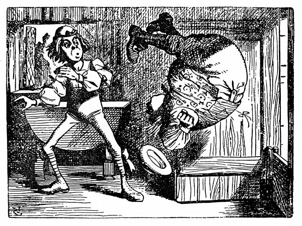
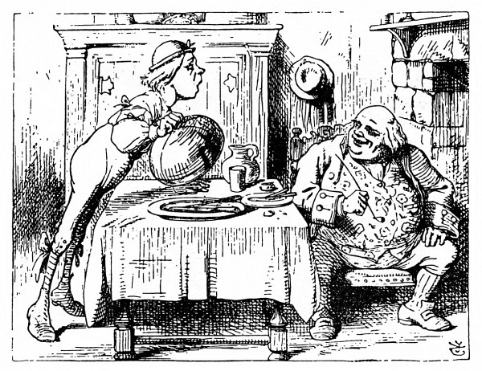
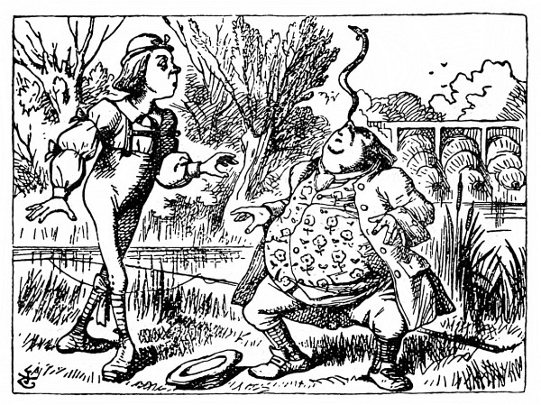

Houseňákova rada
Houseňák s Alenkou na sebe chvíli mlčky hleděli. Nakonec vyndal Houseňák fajfku z úst a lenivě, ospale promluvil.
„Kdopak jsi?“ řekl Houseňák.
Když na ni takhle spustil, nebylo Alence tuze do řeči. Odpovídala zaraženě: „Kdo – kdo jsem teď, to prosím ani nevím – vím jen, kdo jsem byla, když jsem dnes ráno vstávala, ale od té doby jsem se už jistě několikrát proměnila.“
„Jak to myslíš?“ hartusil Houseňák. „Vyjádři se!“
„Jakpak se mám vyjádřit, když to nejsem já, rozumíte?“ řekla Alenka.
„Nerozumím,“ odpověděl Houseňák.
„Když já vám to lépe povědět neumím,“ odpověděla zdvořile Alenka, „sama to nechápu; být za jeden den hned malý a hned zas velký, to se člověku poplete.“
„Ba ne,“ řekl Houseňák.
„Vy jste to možná ještě nezkusil,“ řekla Alenka. „Však až vy se zakuklíte – a jednoho dne vás to nemine – a potom se proměníte v motýla, jistě vám z toho taky bude všelijak.“
„Vůbec ne,“ řekl Houseňák.
„Možná že vám to ani nepřijde,“ řekla Alenka, „zato mně by z toho bylo hodně divně.“
„Tobě!“ ušklíbl se Houseňák. „A kdo ty vlastně jsi?“
A tak byli zase tam, kde začali. Alenku trochu zlobilo, že je Houseňák tak skoupý na slovo, a nadurděně mu odsekla: „Snad byste mi napřed měl říct, kdo jste vy.“
„A proč?“ řekl Houseňák.
Už zase taková zapeklitá otázka; Alenka ne a ne trefit na správnou odpověď. Houseňák vypadal náramně nevlídně, a tak se Alenka sebrala a šla pryč.
„Vrať se!“ volal za ní Houseňák. „Něco důležitého ti povím!“

To věru vypadalo slibně; Alenka se otočila a šla zpátky.
„Nebuď zlostná,“ řekl Houseňák.
„A to je všechno?“ Alenka div nevybuchla.
„Ne,“ řekl Houseňák.
Alenka si řekla, že počká, stejně nemá co dělat, a možná že se přece jen něco kloudného doví. Houseňák chvíli bafal s rukama v klíně a nic neříkal, až nakonec znovu vyndal fajfku z úst a řekl: „Tak ty myslíš, že ses proměnila?“
„Ano prosím,“ řekla Alenka, „nepamatuju se, co jsem dřív uměla – a každých deset minut jsem jinak veliká.“
„A co si nepamatuješ?“ zeptal se Houseňák.
„Ale chtěla jsem odříkávat Polámal se mraveneček a ono se mi to nějak popletlo,“ posteskla si Alenka.
„Tak mi říkej Na svatého Řehoře,“ řekl Houseňák.
Alenka složila ruce a spustila:
Na svatého Řehoře,
slyšet kroky na dvoře.
Syn otevře – duše zlatá!–
na hlavě tam stojí táta.
K otci honem utíká,
třese se jak osika.
Ten se směje: Nevídáno,
stojku dělám každé ráno.
Nehubuj mě, Honzíku,
nechci vyjít ze cviku.
Elce pelce do pekelce,
koukej na ty kotrmelce.


Že jsem tuze starý? Ať!
Břicho mám jak zelná káď
a nožičky jako medvěd,
nemusí to každý vědět.
Když jsem dvě klobásy slup,
k tomu plnou mísu krup,
napiju se syrovátky,
pak si lehnu do zahrádky.
Pár křížků mám na hřbetě,
přece rád jsem na světě.
Že už nejsem malý chlapec,
nehoní mě nikdo na pec.

Na nose mám úhoře
a tak chodím po dvoře.
Syn jen vzdychá: „Milý Rochu,
otci rozumu dej trochu.“
„Tak to není,“ řekl Houseňák.
„Taky se mi zdá,“ hlesla Alenka, „některá slova jsou docela jinak.“
„Je to nadobro špatně, od začátku až do konce,“ rozsoudil Houseňák a delší chvíli pak oba mlčeli.
První promluvil Houseňák.
„Jak chceš být veliká?“ zeptal se.
„Na tom mi ani tak nesejde,“ vyhrkla Alenka, „ale pořád se měnit se mi nelíbí, to víte.“
„Nevím,“ řekl Houseňák.
Alenka nic neříkala; to se jí ještě nestalo, aby jí někdo tolik odporoval, a už dostávala zlost.
„A takhle se ti to zamlouvá?“ zeptal se Houseňák.
„No, když dovolíte, byla bych radši o kousíček větší,“ řekla Alenka. „Tři palce na výšku, to nestojí ani za řeč.“
„To je docela slušná výška,“ utrhl se na ni Houseňák a přitom se vztyčil (měřil přesně tři palce).
„Ale když já na to nejsem zvyklá,“ škemrala nešťastná Alenka. A v duchu si řekla: Taky by ta osoba nemusila být tak urážlivá!
„Však si časem zvykneš,“ řekl Houseňák, strčil zase fajfku do úst a zabafal.
Tentokrát Alenka trpělivě čekala, až se Houseňákovi uráčí promluvit. Za chvilku vyndal Houseňák fajfku z úst, párkrát zívl a otřásl se. Potom se spustil dolů z houby a odlezl do trávy a jen tak mimochodem prohodil: „Když vezmeš z jedné strany, budeš větší, když vezmeš z druhé strany, budeš menší.“
Z jedné strany čeho? A z druhé strany čeho? přemýšlela Alenka.
„Houby,“ ozval se Houseňák, jako by se byla zeptala Alenka nahlas, a v mžiku byl tentam.
Alenka se zadumaně zahleděla na houbu a přemítala, kde vlastně jsou ty dvě strany; těžko říct, když je celá kulatá. Nakonec kolem ní rozpřáhla paže co nejdál a oběma rukama kousek u kraje ulomila.
„A teď, kde je která strana?“ řekla si; hned to vyzkoušela, uždibla kousek z pravé ruky a vtom ji něco praštilo do brady: narazila bradou o nohy!
Té náhlé změny se nemálo polekala, ale hned si řekla, že nemá času nazbyt, protože se vůčihledě scvrká; a hned hleděla ukousnout z druhého kousku. Bradu měla tak přimáčknutou k noze, že ani nemohla pořádně otevřít ústa; nakonec je přece jen pootevřela a spolkla kousek houby z levé ruky.
„Vida, konečně mám hlavu volnou!“ libovala si Alenka, ale vzápětí se polekala: uvědomila si totiž, že přišla o ramena; koukla dolů a uviděla jenom dlouhatánský krk, trčící jako stvol ze zeleného listoví, které se vzdouvalo hluboko pod ní.
„Co to jenom je, ta zeleň dole?“ řekla si Alenka. „A kam se mi poděla ramena? A ručičky moje, jak to, že vás nevidím?“ Při těch slovech jimi zamávala, ale všechno marné, jenom to zelené listí v dáli se zavlnilo.
Protože rukama k hlavě zanic nemohla dosáhnout, sklonila hlavu až k nim a potěšilo ji, že se jí krk lehce otáčí na všecky strany jako had. Podařilo se jí ohnout ho do půvabné křivky a už se nořila do listoví – byly to koruny stromů, pod nimiž se předtím procházela – a tu na ni někdo prudce sykl, až ucouvla: vylétla proti ní velikánská Holubice a zuřivě ji tloukla křídly do obličeje.
„Hade!“ zavřískla Holubice.
„Já nejsem žádný Had!“ zlobila se Alenka. „Přestaňte.“
„Říkám ti, ty Hade,“ promluvila Holubice už tlumeněji a zavzlykala: „Zkoušela jsem to všelijak, ale nic jim není vhod!“
„Nemám ponětí, o čem to mluvíte,“ řekla Alenka.
„Zkoušela jsem to v kořenech, zkoušela jsem to v stráních, zkoušela jsem to v živých plotech,“ vedla svou Holubice a neposlouchala ji, „ale ti Hadi! Ničím se jim nezavděčíš!“
Alence to bylo čím dál záhadnější, ale zdálo se jí marné něco říkat, dokud Holubice nedomluví.
„Copak je to malá starost, vysedět vejce?“ řekla Holubice. „A ještě abych se měla ve dne v noci na pozoru před Hady! Tři neděle jsem oka nezamhouřila!“
„To mě mrzí, že tolik zkusíte,“ řekla Alenka; už jí začínalo svítat.
„A zrovna když jsem si vybrala nejvyšší strom v celém lese,“ rozkřičela se Holubice, „a myslela si, že konečně od nich budu mít pokoj, najednou se ke mně připlazí rovnou z nebe! Fuj, ty Hade!“
„Ale říkám vám! Já nejsem Had!“ bránila se Alenka. „Já jsem – já jsem –“
„Tak co tedy jsi?“ řekla Holubice. „Je vidět, že si něco vymýšlíš.“
„Já – já jsem holčička,“ řekla Alenka trochu nejistě, když si vzpomněla, kolikrát se za ten den proměnila.
„Povídali, že mu hráli!“ odbyla ji Holubice opovržlivě. „Viděla jsem už nějakých holčiček, ale s takovým krkem ani jednu! Kdepak, kdepak! Ty jsi Had, to nezapřeš. Ještě mi budeš namlouvat, že jsi nikdy neměla v ústech vejce!“
„Měla, jak by ne,“ řekla Alenka, ona totiž vždycky mluvila pravdu, „vždyť holčičky rády vejce, zrovna jako Hadi.“
„Tomu nevěřím,“ řekla Holubice, „ale jestli je opravdu rády, tak jsou to stejně Hadi, a basta!“
Něco takového Alence ještě nikdy nenapadlo; chvilku byla zaražená a Holubice toho využila a dodala: „Slídíš po vajíčkách, to já dobře vím, a jestli jsi holčička, nebo Had, to je mi jedno.“
„Ale mně to vůbec není jedno,“ vyhrkla Alenka, „náhodou po vajíčkách vůbec neslídím – a i kdyby, o vaše nestojím; syrová já nerada.“
„Kliď se odtud,“ hartusila Holubice a uvelebila se zase v hnízdě. Alenka se usilovně prodírala stromovím, ale krk se jí stále zaplétal do větví, takže se musila co chvíli zastavit a krk vyprošťovat. Potom si vzpomněla, že ještě pořád drží v rukou kousky houby; opatrně se do nich pustila, uždibla nejprve z jedné ruky, potom z druhé, jednou trochu povyrostla, potom se zas scvrkla, až se jí nakonec poštěstilo, že byla zas tak veliká, jako bývala dřív.
Dávno již nebyla ani přibližně tak veliká. Zprvu jí to bylo až divné, ale za chvíli si na to zvykla a zas už k sobě promlouvala jako obyčejně: „Vida, přání se mi napůl splnilo! Ty změny jsou samá záhada! Nikdy nevím, co se se mnou v příštím okamžiku stane. Hlavně že už jsem zase, jak jsem bývala; a teď se jen dostat do té krásné zahrady – ale jak –?“ Jen to dořekla, octla se na mýtince a tam stál domek vysoký necelé čtyři stopy. Alenka si řekla: „Ať už tam bydlí, kdo chce, takhle veliká k nim přijít nemohu, vždyť bych je k smrti vylekala.“ Uždibovala tedy znovu z pravé ruky, a teprve když se zmenšila na pět palců, odvážila se blíž k domku.